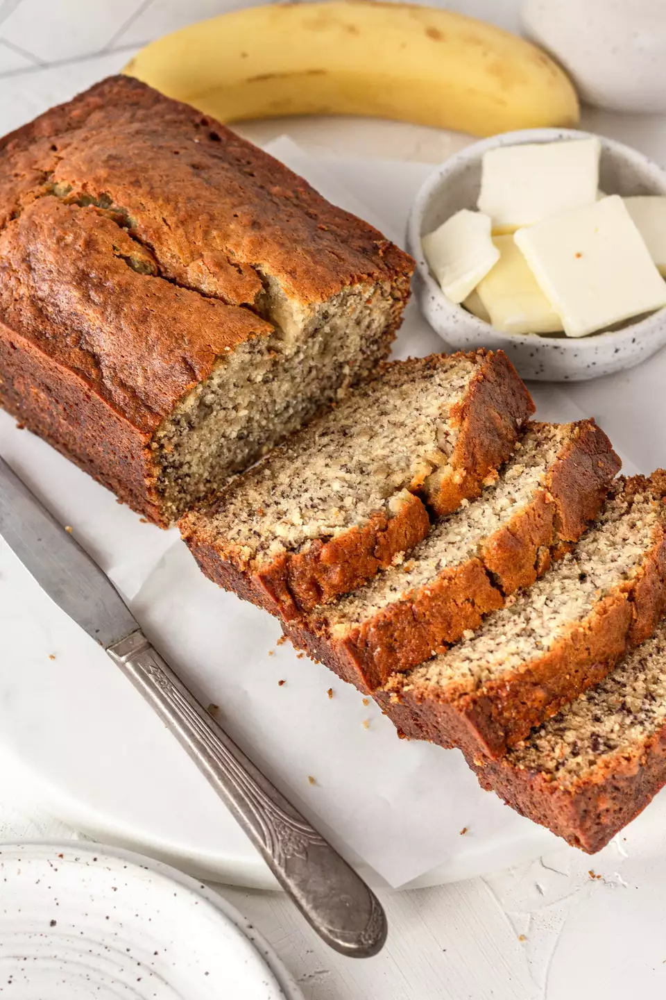

Banana Bread!

Description
Yo momma's favorite weekend treat for you is ridiculously simple to make! Here are the ingredients you need:
Ingredients
- 2 to 3 medium (7" to 7-7/8" long) very ripe bananas, peeled (about 1 1/4 to 1 1/2 cups mashed)
- 1/3 cup butter, unsalted or salted, melted
- 1/2 teaspoon baking soda
- 1 pinch salt
- 3/4 cup sugar (1/2 cup if you would like it less sweet, 1 cup if more sweet)
- large egg, beaten
- 1 teaspoon vanilla extract
- 1 1/2 cups all purpose flour
Directions
- Preheat the oven to 350F
- Melt your butter
- Mash your bananas and mix in the rest of your ingredients
- Once evenly mixed, pour the batter into a greased bread pan
- Let it bake for an hour and use a knife to test it's done-ness by stabbing it periodically until it comes back clean.
- Let the bread rest at least a couple hours before cutting into it and giving it a taste.